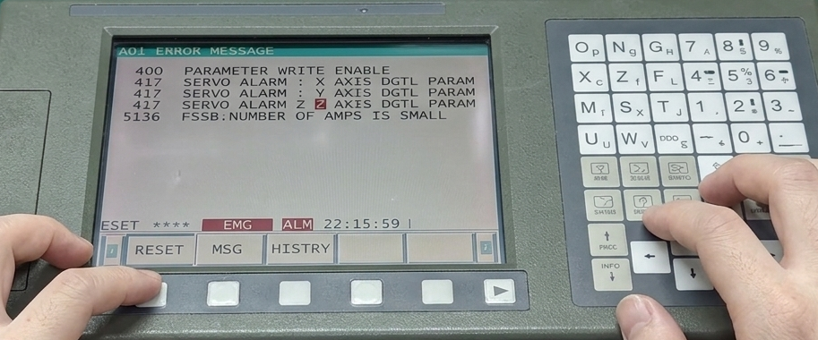
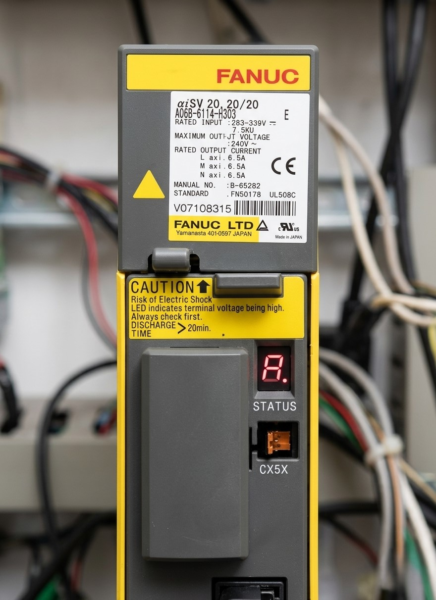

La alarma Fanuc 417: SERVO ERROR EXCESS

La alarma Fanuc 417 indica que el eje no puede seguir correctamente la posición ordenada por el CNC, generando un error de seguimiento excesivo.
Estado de la máquina: Bloqueada.
Causa: Error de seguimiento del eje.
Solución rápida: Revisar mecánica, encoder y servo.
Nivel de urgencia: Muy alta.

Diagnóstico de Hardware y Software (Alarma 417): A diferencia del error 414 que indica un fallo de conexión física, el Error 417 señala una discrepancia en los parámetros digitales cargados en los módulos de servo (unidades amarillas). Esta imagen muestra la relación entre la alerta en el control y los componentes de potencia responsables del movimiento de los eje
La alarma Fanuc 417 indica que el eje no puede seguir la posición ordenada por el CNC. Esto suele implicar que el motor está forzando el sistema sin conseguir mover correctamente el eje.
"Intentar continuar el mecanizado con error de seguimiento puede provocar colisiones o roturas en el sistema mecánico."
Consecuencia: Daños en husillos de bolas, guías lineales, rodamientos o incluso en la herramienta, pudiendo derivar en una avería mecánica grave.
Se recomienda realizar un diagnóstico completo del sistema de servo antes de volver a poner la máquina en producción.
📞 Contacte con servicio técnico.